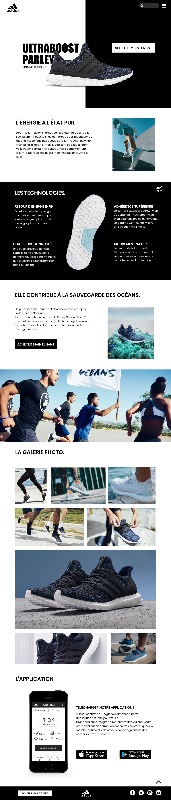

Projet d'étude Chaussure connectée

Le brief client
Nous aimerions un site onepage qui met en avant les valeurs de notre collection, avec des mises en situation de la chaussure (ce n'est pas grave si les chaussures que portent les sportifs dans les visuels ne correspondent pas aux chaussures mises en valeur, faites au mieux avec les banques d'images/images disponibles).
- Il faudrait que le site puisse :
- mettre en avant le modèle/la collection et montrer ce que notre produit possède de spécifique et technique (matière, technologies, etc...)
- permettre par un call to action l'achat vers un autre site externe (qui n'est pas à designer)
- montrer des mises en situation avantageuses et travaillées visuellement d'athlètes portant ces chaussures
- montrer l'aspect "connecté" de la chaussure à travers une application dédiée téléchargeable (cf. ci-dessous)
La maquette desktop :
L'application
Nous aimerions une application qui permettent aux gens qui l'ont téléchargé de connecter leur téléphone avec les chaussures associées, afin de voir en temps réel mais aussi en statistiques l'utilisation des chaussures.